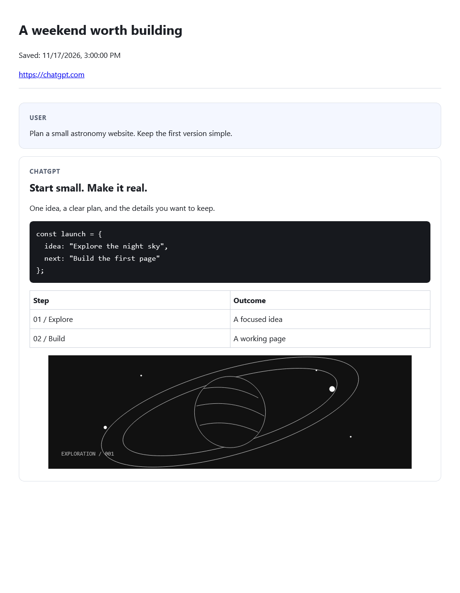

Сохраните диалог.
Вернитесь к важному.
Идеи, код и полезные ответы — в файлах, которые остаются у вас. Экспортируйте разговор целиком или только нужные сообщения.
Бесплатно · Открытый код · Firefox 142+
- TXT
- MD
- HTML
- JSON
- ZIP архив чатов
01 / Как это выглядит
60 СЕКУНД · СО ЗВУКОММинутный обзор: выбор сообщений, изображения, PDF и ZIP-архивы. Все диалоги в видео вымышлены.
Скачать видео02 / Из разговора — в документ
Всё полезное.
В удобном формате.
Откройте и продолжайте
HTML для чтения, PDF для печати, Markdown для заметок. TXT и JSON — когда нужен текст или структурированные данные.
Код, таблицы, изображения
Сохраняйте форматирование и поддерживаемые изображения в HTML и PDF. Отдельно выбирайте картинки из своих сообщений и ответов ИИ.
Несколько чатов — в ZIP
Выбирайте сохранённые диалоги ChatGPT и собирайте текстовый архив с оглавлением и отчётом. Изображения в этот ZIP не входят.

Ваши диалоги.
Ваши файлы.
Расширение обрабатывает разговоры в вашем Firefox. Оно не отправляет их разработчику, не собирает аналитику и не требует отдельного аккаунта.
Для получения диалогов и изображений используется ваше подключение к ChatGPT или Gemini.
Подробнее о конфиденциальности ↗03 / Начните с одного диалога
FIREFOX 142+- 1
Установите расширение
Скачайте подписанный Mozilla файл XPI и откройте его в Firefox. Подтвердите установку.
- 2
Откройте разговор
Перезагрузите вкладку ChatGPT или Gemini. Нажмите значок Dialogue Export на странице или панели Firefox.
- 3
Выберите и сохраните
Укажите сообщения и формат. Нажмите Export; для PDF — Prepare PDF, затем «Сохранить как PDF» в окне печати.
Если файл просто скачался: about:addons → ⚙ → «Установить дополнение из файла…». Держите вкладку разговора открытой до завершения экспорта.
04 / Перед первым экспортом
Несколько деталей, чтобы результат совпал с ожиданиями.
Сообщить о проблеме ↗ChatGPT и Gemini работают одинаково?
Оба поддерживают экспорт текущего разговора. Прямое чтение сохранённых диалогов и архив нескольких чатов доступны для ChatGPT. Gemini использует сбор сообщений со страницы.
Можно сохранить длинный диалог?
Большие HTML/PDF-экспорты сохранённых чатов ChatGPT могут разбиваться на нумерованные части. Части PDF печатаются отдельно. Ограничения на размер и поддерживаемое содержимое остаются.
Все картинки будут в исходном качестве?
Расширение сохраняет доступные поддерживаемые изображения. Иногда сервис предоставляет превью, а не оригинал. Недоступные изображения и неподдерживаемые компоненты могут остановить экспорт с объяснением.
Это полная резервная копия аккаунта?
Нет. ZIP содержит тексты выбранных диалогов ChatGPT, без изображений, PDF и альтернативных веток. Проверяйте важные экспорты: начало, середину и конец разговора.